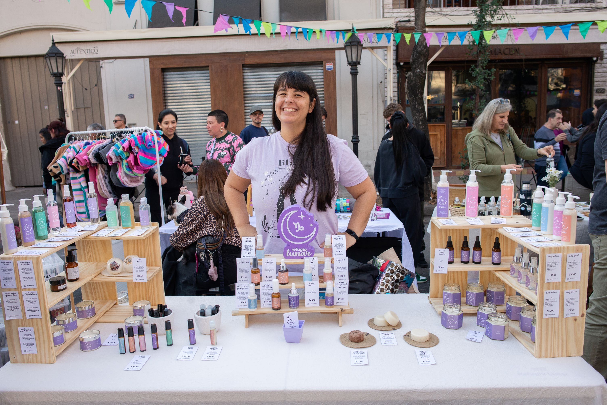
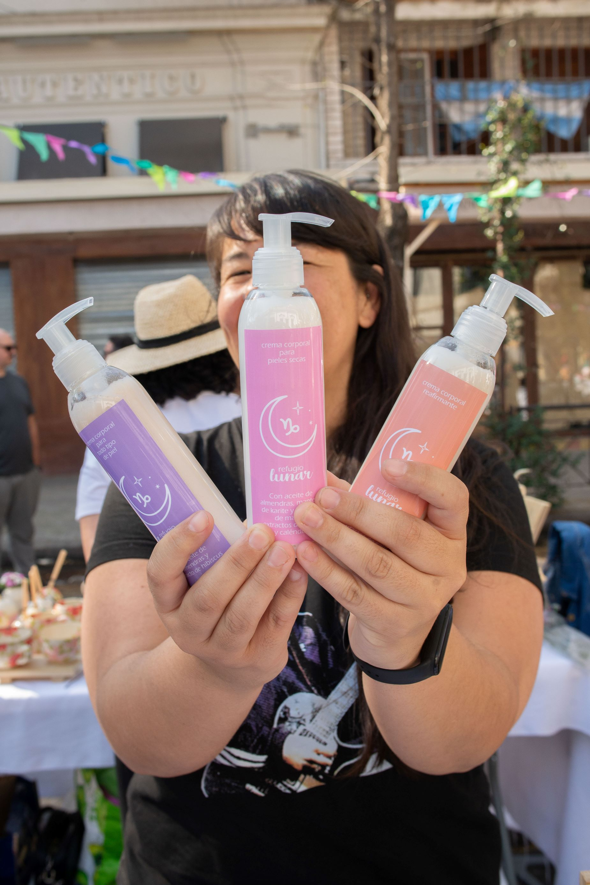

hola! Soy Rocío!
Y acá te cuento un poco más de mi
Dias de Feria
Los días de feria son muy importantes porque son cuando podemos interactuar con nuestros clientes y tenemos un ida y vuelta increible, que nos hace pensar ideas nuevas y a su vez nos hace ver que lo que estamos haciendo es elegido.


Cada uno de nuestros productos es realizado con mucho amor y dedicación
La creación de cada producto lleva horas de estudio para elegir los activos ideales para cada objetivo.
Después hacemos muchas pruebas antes de que un productos "salga a la calle".
Todo esto no sería posible si no amáramos lo que hacemos